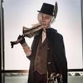
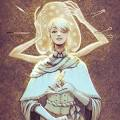
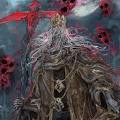

Personajes Bloodborne
Gehrman

Gehrman, un anciano en silla de ruedas, es un personaje misterioso que parece actuar como guía del Cazador a lo largo del juego.
Losefka

Iosefka es una mujer de buen corazón que ayuda a todos los posibles pacientes civiles que se acercan a su clínica titular, aunque se niega a dejar entrar al Cazador por miedo a propagar la infección de la bestia.
Logarious

Martyr Logarius es un jefe opcional y está ubicado en el Castillo de Cainhurst . Martyr Logarius es un jefe difícil y de ritmo rápido que lanza varios hechizos a lo largo de la pelea.